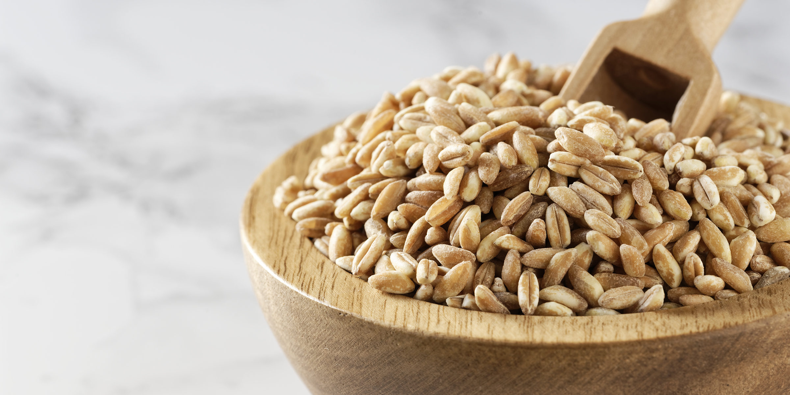

Farro

Farro is earthy and good. Eat it
- 2 C Farro, rinsed
- 2 qt broth
- 1/4 C shallots, minced
- 4 large garlic cloves sliced
- 1/4 butter
- Melt butter in a large enough pan for this project
- Sweat shallots and garlic until translucent and fragrant with some salt
- Add farro and broth and bring to a simmer
- Taste for salt. The broth should have a slight saltiness to it
- Simmer until done.25-40 minutes for unprocessed farro and 15 minutes for pearled farro.
- Drain off excess liquid and taste for seasoning
- Finish with whatever fresh herbs you have laying around.